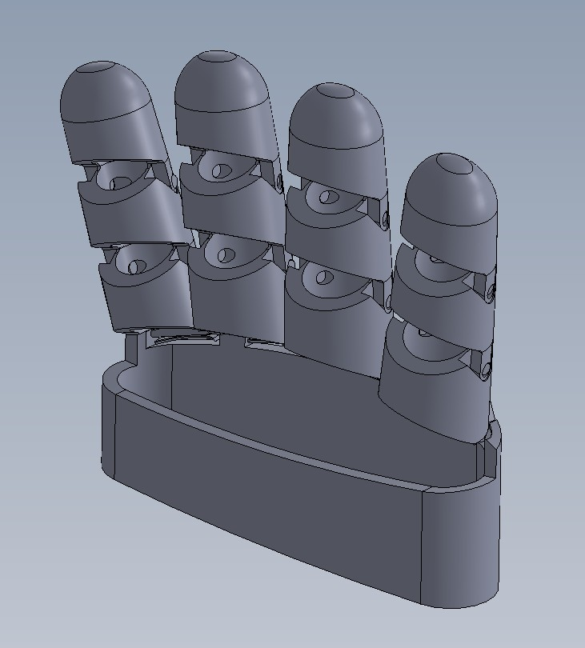
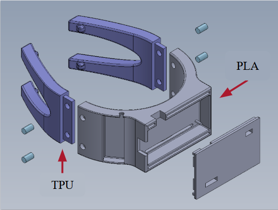

Exoskeleton Hand
Design and development of a wearable hand exoskeleton,
including CAD modeling, mechanical design, rapid
prototyping, and iterative development.
Skills:
SolidWorks, CAD, 3D Printing, Mechanical Design,
Prototyping
View Project

Pickleball Biomechanics MQP
Development of a wearable system designed to investigate
biomechanical loading and movement during pickleball.
Skills:
Biomechanics, Sensors, MATLAB, Mechanical Testing,
Data Analysis
View Project
Drop-Foot Device
Design and prototyping of a mechanical device intended
to assist with drop-foot during walking.
Skills:
Mechanical Design, CAD, Prototyping,
Biomechanics
View Project